До 50 гостей
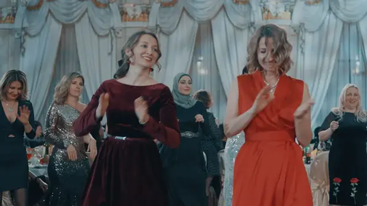
Камерный Новый год
- зал и банкет
- командная игра на выбор
- ведущий и диджей
- Дед Мороз и Снегурочка
- итоги года и награждение
от 12 000 ₽ за гостя
Тимбилдинги и командные мероприятия для 30–3 000 человек. 50+ программ под ваши задачи и бюджет.
С нами сотрудничали
более 700 компаний

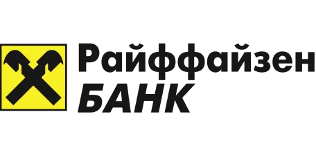

от 12 000 ₽ за гостя

Всё из пакета «Камерный Новый год», плюс:
от 9 500 ₽ за гостя
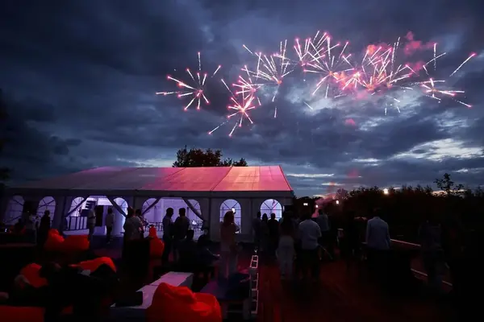
Всё из пакета «Новый год компании», плюс:
от 10 000 ₽ за гостя
В этой подборке ничего не найдено. Посмотреть полный каталог
У нас более 50 готовых тимбилдингов. Мы можем доработать любой тимбилдинг под задачи мероприятия или разработать индивидуально.
Если на площадке нет звукового оборудования, оно рассчитывается отдельно.
Добавляем по запросу.
Состав и стоимость фиксируем в смете.
Тимбилдинг не заменяет управленческих решений, но снимает барьеры между людьми.
Вечер с церемонией, историей бренда и наградами.
Фестиваль на природе: зоны, спорт и гастрономия.
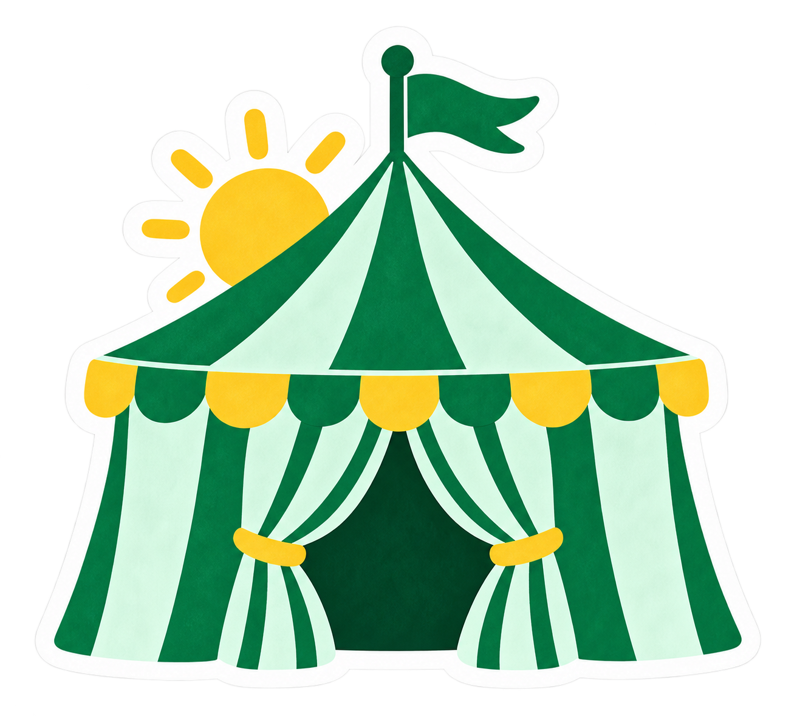
Подробнее о форматеПраздник с общей темой: сценарий, оформление и развлечения в одном стиле.
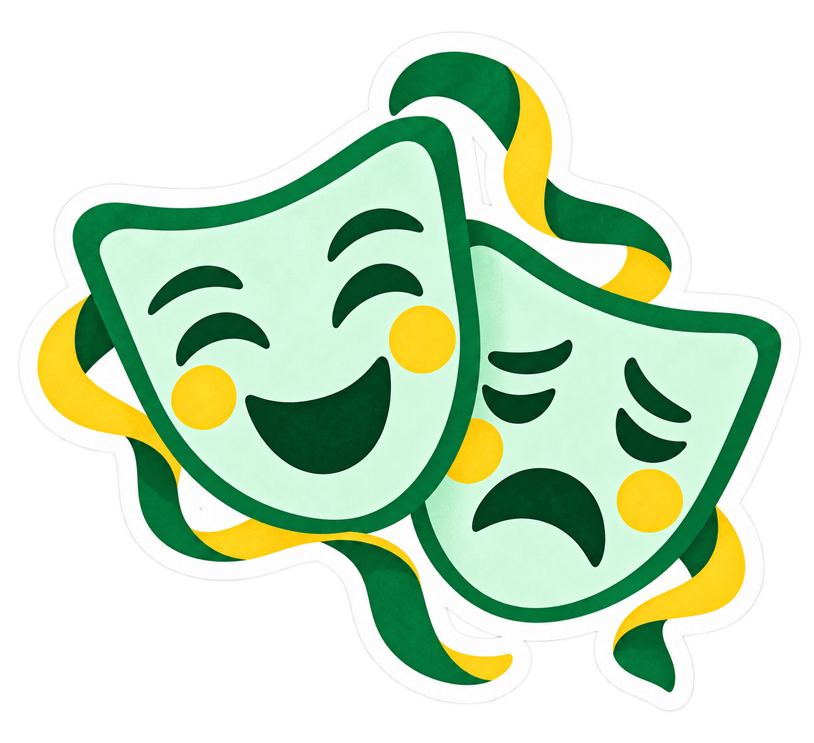
Подробнее о форматеВыберите повод или тему праздника. Мы соберём событие целиком; командную игру можно включить в его программу.
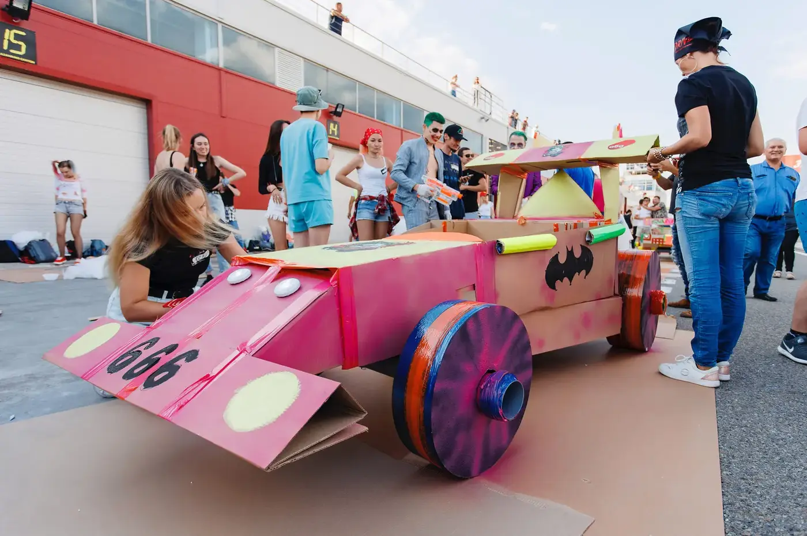
За это время реализовали
4 800+ проектов
Сценарии пишем сами, реквизит делаем на своём производстве, ведущих готовим в своей школе.
авторских
программ
побед
в ивент-премиях
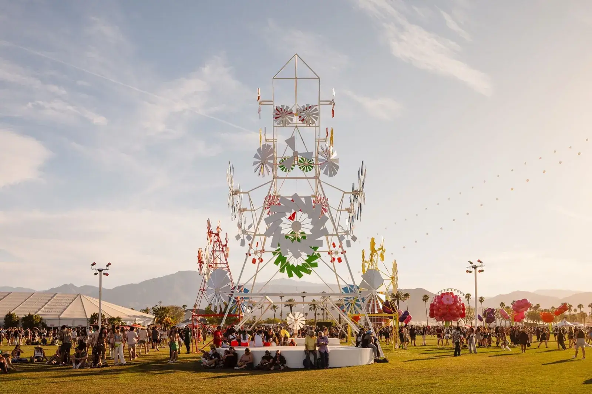
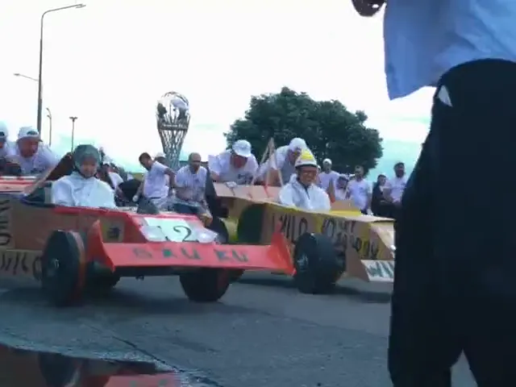
350 участников · 50+ болидов
Команды собирают болиды и выходят на старт.
Смотреть проект →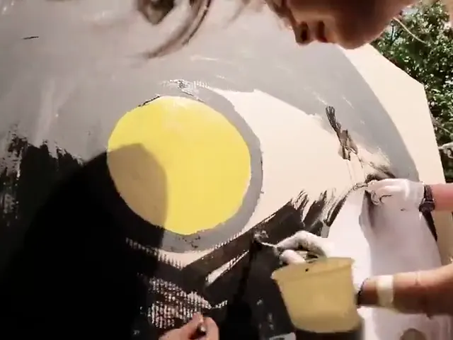
60+ участников · 6+ фудтраков
Команды создают свои фудтраки и устраивают фестиваль.
Смотреть проект →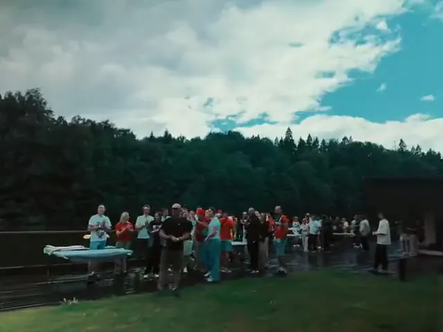
160+ участников · 20+ команд
Участники собирают башню размером с трёхэтажный дом.
Смотреть проект →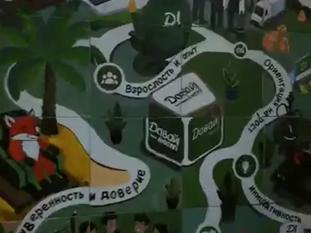
80+ участников · 16 секций
Команды рисуют отдельные фрагменты и соединяют их в общее полотно.
Смотреть проект →«Лучший тимбилдинг года» · «Лучший командообразующий проект»
BEMA · Событие года · Event-прорыв · Золотой пазл
Более 50 авторских программ для команд от 10 до 3 000 человек: от гонок на самодельных болидах и квестов до тимбилдингов с нейросетями. Каждую проводим под ключ: сценарий, ведущие из нашей школы, реквизит собственного производства, площадка и фотоотчёт. Подберём формат под вашу задачу и доработаем любую программу.
Гигантский 10-метровый арт-объект, который команда создаёт своими руками. Аналогов в России нет.
Новогодние тимбилдинги
Круглый год в помещении: строим город и цепную реакцию, запускаем ракеты, играем в квиз.
Бизнес-игры В помещении от 3 200 ₽
Топовая бизнес-игра: команды строят город из тысяч деталей и договариваются, как собрать его в единый Мегаполис.
Бизнес-игры В помещении от 3 300 ₽
Строим гигантскую цепную реакцию по принципу домино и запускаем её целиком. Прокачивает командную работу.
Командная викторина: сложность подстраивается под участников, разные форматы вопросов и заданий.
Команды конструируют и запускают ракеты, космическое инженерное приключение.
Интеллектуально-юмористическое шоу на корпоратив, с фактами и вопросами о самой компании.
Тимбилдинги с нейросетями (4)
Стартап, музыкальный трек или картина вместе с ИИ. Стартап победил на BEMA 2025.
Нейросети В помещении от 3 200 ₽
Команды создают AI-стартапы и защищают идею для рынка. Победитель BEMA 2025 за ИИ-проект.
Нейросети В помещении от 3 400 ₽
Команды записывают треки с помощью нейросетей и представляют их на большой сцене. Выпускаем общий альбом.
Практический AI-тимбилдинг: команда вместе с нейросетями создаёт цифровое произведение искусства. Работа с Midjourney и ChatGPT.
Новогодний тематический тимбилдинг с нейросетями: команды создают арт-календарь года.
Творческие тимбилдинги (8)
Команда своими руками создаёт картину, фильм, озвучку или спектакль.
Творческие В помещении от 3 200 ₽
Гигантский шедевр от 3 метров: рисуем вместе и забираем картину в офис.
Творческие В помещении от 3 300 ₽
Саунд-дизайн в симбиозе с нейросетями: команды профессионально озвучивают ролики предметами-инструментами, награды по номинациям.
Творческие В помещении от 3 500 ₽
Команды снимают рекламные ролики и мини-фильмы: идея, съёмка, монтаж и показ на большом экране с наградами по номинациям.
Креатив В помещении от 4 700 ₽
Команды создают гигантских 5-метровых марионеток и ставят с ними танцевальный номер. Финал, яркий парад-показ.
Команды играют мировые хиты на разноцветных музыкальных трубках и собираются в единый оркестр.
Совместный флешмоб-номер сотрудников: репетиция и яркое выступление на сцене.
Необычный творческий формат из шерсти, яркое рукодельное дополнение к событию.
Кулинарные тимбилдинги (4)
Фудтраки, пицца диаметром 3 метра и кофейная бизнес-игра.
Событие года Ивент прорыв
Необычные На улице от 3 700 ₽
Команды строят фудтраки, у каждого своя кухня мира. На фестивале каждый фудтрак зарабатывает игровую валюту. Премия «Событие года» за лучший тимбилдинг-проект.
Необычные На улице от 3 200 ₽
Готовим пиццу диаметром 3 метра, самую большую в России. Готовит вся команда, такой формат есть только у Каталист.
Атмосферная бизнес-игра вокруг кофейного дела для сплочения команды.
Кулинарные На улице от 3 500 ₽
Команды строят тележки с мороженым, каждая со своим вкусом, и соревнуются в продажах. Формат по мотивам Фестиваля Фудтраков.
Спортивные тимбилдинги (6)
Полоса препятствий, гонки на болидах и спортивные квесты.
Полоса препятствий с мягкими покрытиями, уровень сложности подстраивается под любую подготовку команды.
Спортивные На улице от 3 300 ₽
Премиальный спортивный тимбилдинг в стиле F1: болиды, скорость, командный результат.
Спортивные В помещении от 4 700 ₽
Команды строят картонные болидовы-тарантасы и устраивают заезды в духе фильмов Чарли Чаплина. Комплектующие из Швейцарии.
Спортивный квест с элементами творчества и юмора: команды проходят этапы со спортом, логикой, творческими заданиями и фаном.
Командные спортивно-интеллектуальные испытания, классика командообразования на свежем воздухе.
Заезды на легендарных Монстер Траках с огромными колёсами, драйв и адреналин для команды.
Приключения на свежем воздухе: от Форта Боярд до ночного хоррор-квеста.
Необычные На улице от 3 300 ₽
Легендарное приключение по мотивам телешоу: команда проходит испытания и добывает ключи, чтобы получить золото в финале.
Эко Офис или улица Новинка
Команда собирает деревянные фигурки-кашпо и высаживает живые растения. Очень мило и душевно.
Необычный хоррор-квест: актёры, вертолёты, дымовые завесы и 15 спецэффектов. Только вечером и ночью.
На воде На улице от 3 600 ₽
Водный тимбилдинг: участники строят плоты, спускают их на воду и устраивают настоящий заезд. Очень зрелищно.
Мы выкладываем только живые отзывы, а не благодарственные письма, чтобы вы могли посмотреть живые эмоции наших клиентов
Формула 1 · 350 участников
Гонки ракет · 230 участников
Мегаполис · 150 участников
Агентство «Континент Экспресс»
Мегаполис · 100 участников
Корпоратив · 400 участников
Мегаполис · 50 участников
Мастерская управления Сенеж
WOW Пицца · 200 участников
Новогодний корпоратив · 600 участников
Мегаполис · 200 участников
Машина Голдберга · 100 участников
Фестиваль Фудтраков · 150 участников
Мегаполис · 130 участников
Мегаполис + Картина · 160 участников
Art&Fun&Sport · 160 участников
Нейрогалерея · 130 участников
WOW Пицца · 130 участников
Каннский фестиваль · 150 участников
Континент Экспресс , Ирина
Мегаполис · 230 участников
Нейрогалерея · 100 участников
Режиссерская версия , Дарья
Формула 1 · 100 участников
Мегаполис · 350 участников
Частный организатор , Анастасия
Нейрокалендарь · 60 участников
WOW Пицца · 120 участников
Частный организатор , Михаил
Машина Голдберга · 200 участников
Цепная реакция · 250 участников
Радиоприборснаб , Анастасия
Машина Голдберга · 150 участников
Машина Голдберга и Корпоративная картина · 60 участников
Формула 1 · 140 участников
Корпоративная картина · 400 участников
WOW Пицца · 150 участников
Мегаполис + Мосты · 400 участников
Фестиваль Фудтраков · 300 участников
АО «НПК «Криптонит» , Валерия
Формула 1 · 400 участников
Фестиваль Фудтраков · 90 участников
Гонки на плотах · 100 участников
Мегаполис · 300 участников
Отель Les Art Resort , Анна
WOW Пицца, день рождения отеля · 150 участников
Новые миры · 100 участников
Агентство «Marketing Division» , Наталья
Новые миры · 80 участников
Агентство «Redday» , Даниил
Формула 1 на трассе в Сочи · 340 участников
Промстройконтракт , Светлана
Мегаполис с мостами · 120 участников
Нейрогалерея · 150 участников
Бюро трансформаций бизнеса Т. Спурновой
Мегаполис · 30 участников
Частный организатор , Юлия
Мегаполис · 60 участников
Нейрогалерея · 125 участников
Сыроварня · 50 участников
Континент Экспресс , Юлия
Мегаполис · 85 участников
Мегаполис · 110 участников
Нейрогалерея · 35 участников
Корпоративная картина · 60 участников
Мегаполис и Квиз · 65 участников
Новогодний тимбилдинг · 600 участников
НТЦ СТЭК оператор , Мария
Новогодний тимбилдинг · 500 участников
Программа ТВ Шоу · 60 участников
Сбер Университет , Лусинэ
Фестиваль Фудтраков · 85 участников
Нейросети · 110 участников
WOW Пицца · 110 участников
Формула 1 · 150 участников
Мегаполис · 140 участников
Континент Экспресс , Мария
WOW Пицца · 100 участников
Мегаполис + Мосты · 200 участников
Формула 1 · 160 участников
Корпоративная картина · 200 участников
Континент Экспресс , Дмитрий
Ent Services , Александра
Гонки Чаплина · 55 участников
Цепная реакция · 60 участников
Фестиваль Фудтраков · 50 участников
Профсоюз Татарстана , Альбина
Формула 1 · 1 400 участников
Гонки на машинах Чаплина · 60 участников
Корпоративная картина · 100 участников
Мегаполис · 120 участников
Фестиваль Фудтраков · 100 участников
Серия мероприятий · 400 участников
Агентство Мандариновая лиса , Катерина
Цепная реакция · 150 участников
Посмотрите видео с проектов, чтобы лучше почувствовать атмосферу на наших тимбилдингах и увидеть, что говорят клиенты и участники
Каталист в Томске
Выездной тимбилдинг: город из картона
Фестиваль Фудтраков
120+ участников строят фудтраки и выходят на продажи
WOW Башня
200+ человек, 3 часа, одна башня
4 800+ проектов и 16 наград за одну минуту
150 человек строят лопасти для башни
Формула 1
Собираем болид и выходим на старт
Кадры с летнего фестиваля
Это же просто тимбилдинг?
Момент, когда коллеги становятся командой
От идеи до продаж: фудтрак, бренд, меню
Фестиваль Мороженого
Рассказывает Ирек Мансуров
Гонки на плотах
Приключение для команды на воде
Тимбилдинг с нейросетями
Практический мастер-класс для сотрудников
Сыроварня
Варим сыр, в финале винная премия
Корпоративная картина
Арт-тимбилдинг для МегаФона на 1800 человек
WOW Пицца
Трёхметровая пицца, рассказывает шеф Кирилл Еселев
Мегаполис
Тимбилдинг по строительству города
Экипаж
Бизнес-игра: гости в роли капитанов самолётов
Гонки Чаплина
Заезды на тарантасах Чарли Чаплина
Заезды на настоящей трассе в Сочи
Машина Голдберга
Отзыв о тимбилдинге для 800 человек
Театр Марионеток
Команда оживляет огромную куклу
Команды строят общую цепную реакцию
Лучшие кадры наших тимбилдингов
Город из картона, рассказывает Ирек Мансуров
Тимбилдинг на настоящей трассе F1
Короткий ролик с трассы F1
Гости в роли капитанов самолётов
Самая большая пицца России
Рассказывает сыровар Елена Калинина
Арт-тимбилдинг: рисуем общую картину
Цепная реакция от всей команды
Что о нас думают организаторы
Космическая станция
Реактивный тимбилдинг: запуск ракет
Оркестр
Собираем оркестр за 30 минут
Короткая версия на 30 секунд
Тимбилдинг для компании на 30 человек
Остановили время для 500 человек
Людей много, картина одна
Что о нас думают компании
Зомби квест
Вертолёт, 30 актёров и заброшенное здание
Цепная реакция
Команды запускают общую цепную реакцию
Корпоративный флешмоб
Флешмоб силами всей команды
Сотни людей в творческом процессе
Гонки болидов, собранных командами
Проекты, награды, клиенты и отзывы за 15 лет работы.
Каталист — это ивент-агентство полного цикла: с 2010 года придумываем и проводим тимбилдинги, корпоративы и деловые мероприятия для команд от 10 до 3 000 человек. Сценарии пишем сами, реквизит делаем на своём производстве, ведущих готовим в своей школе. Ниже: кто отвечает за качество, сколько стоит тимбилдинг, кто наши клиенты, живые отзывы и кейсы.
15 лет организуем тимбилдинги и корпоративы: работаем с 2010 года
4 800+ реализованных проектов
16 побед в ивент-премиях, в том числе BEMA 2025
700+ клиентов: от Сбера и ВТБ до Яндекса
98% положительных отзывов, нас рекомендуют
96% индекс NPS: удовлетворённость клиентов
ТОП-3 агентств-организаторов тимбилдингов
Своё производство реквизита и школа аниматоров Кейсыпроекты для компаний Отзывы500+ живых отзывов Клиенты700+ компаний Ценыот 3 200 ₽ с гостя Контроль качестваслово руководителя
Мы в ТОП-3агентств-организаторов тимбилдингов
Собственное производство и школааниматоров
98% положительных отзывов. Нас рекомендуют
Индекс NPS 96%(удовлетворенность клиентов)
Уважаемые коллеги! Агентство Каталист занимается организацией тимбилдингов с 2010 года. Мы ежедневно дорабатываем и улучшаем наши программы, чтобы они приносили результат и радовали вас и ваших сотрудников!
Мне очень важно, чтобы вы были довольны нашей работой. Если во время сотрудничества что-то пошло не так, напишите мне лично в удобный для вас мессенджер.
Реальные проекты с клиентами и цифрами: сколько людей, что построили, какой результат. Рейтинг 5.0 на Яндекс Картах, ZOON и Google.
Все кейсы
Гонки Формула-1 на 350 участников 50+ болидов 1 чемпион
Фестиваль Фудтраков 60+ участников 6+ фудтраков
Гонки на плотах даже под ливнём 100+ сотрудников 10+ плотов
Башня размером с 3-этажный дом 160+ участников 20+ команд
Тимбилдинг на 350+ участников
Драг-рейсинг и Машина Голдберга механизм 100+ м 10+ болидов
Программа: Корпоративная картина
Картину никто не видел целиком 80+ участников 16 секций
Фестиваль Фудтраков, часть 1 800 000 ₽ 4 направления
Золотой пазл Событие года
Фестиваль Фудтраков, часть 2 300 участников ещё 3 заказа
Тимбилдинг на котором топ менеджеры Вкусвилл сами собирали сумки для курьеров
Огромный город мечты c отделениями Ru Store в каждом районе
21 кухня мира в исполнении сотрудников Райффайзен Банка. Главный корпоративный фестиваль года
Гонки на 400 человек на самой большой трассе в Казани
Стратсессия, на которой с помощью нейросетей сотрудники Pepsico придумали новый концепт продукта
Самая большая и вкусная пицца для дружного коллектива Додо Пицца
Каталист собирает мероприятие целиком: сценарий, площадка, техника, кейтеринг,
ведущие и подрядчики. С 2010 года провели 4 800 проектов, крупнейший собрал 3 000 участников.
Организация корпоратива под ключ
Сценарий, площадка, техника и кейтеринг в одном договоре
Цены и программы тимбилдинга
50+ авторских программ для команд от 10 до 3 000 человек
Корпоративные мероприятия
Конференции, юбилеи компании, семейные дни, выездные сессии
Выездной корпоратив за городом
Площадки Подмосковья, трансфер, проживание и программа
Организация мероприятий под ключ
От брифа до отчёта: 7 этапов, один менеджер на проекте
Новогодний корпоратив 2027
Сценарии, площадки и даты декабря, бронь с сентября
Мероприятия с нейросетями
Программа-лауреат премии BEMA 2025 за проект с ИИ
Ивент-агентство полного цикла
С 2010 года, 16 отраслевых наград, работаем по всей России
Не выбрали формат? Начните с основ: что такое тимбилдинг и чем он отличается от корпоратива, как организовать корпоратив по этапам и срокам, какие бывают программы тимбилдинга на природе с ценами и что мы добавили в новинки тимбилдинга 2026. А если команда хочет освоить ИИ, есть мастер-класс по нейросетям для команды.
У нас более 50 готовых тимбилдингов. Мы можем доработать любой тимбилдинг под задачи мероприятия или разработать индивидуально
Город Мегаполис от 3 200 ₽/чел
Фестиваль Фудтраков от 3 700 ₽/чел
Стартап с нейросетями от 3 200 ₽/чел
Машина Голдберга от 3 300 ₽/чел
Корпоративная Картина от 3 200 ₽/чел
Музыкальный Лейбл от 3 400 ₽/чел
Art&Fun&Sport от 3 300 ₽/чел
Форт Боярд от 3 300 ₽/чел
Супер Ниндзя от 450 000 ₽
Озвучка 2.0 от 3 300 ₽/чел
Театр Марионеток от 3 200 ₽/чел
Заезды Soap Box от 4 700 ₽/чел
Гонки на плотах от 3 600 ₽/чел
Фестиваль Мороженого от 3 500 ₽/чел
Новогодний корпоратив Шоу, командная игра и награждение по итогам года. от 3 200 ₽ за гостя Летний выезд на природу Фестиваль на природе: зоны, спорт и гастрономия. от 3 300 ₽ за гостя Юбилей компании Вечер с церемонией, историей бренда и наградами. от 4 700 ₽ за гостя Стратегическая сессия команды Рабочий день с ведущим, в финале план с ответственными и сроками. от 3 200 ₽ за участника
Новогодний корпоратив Летний выезд на природу Юбилей компании Стратегическая сессия команды
Новогодний тимбилдингЗимний тимбилдингТимбилдинг с нейросетямиБизнес-игры для сотрудниковТимбилдинг по конструированиюКартонный тимбилдингКулинарный тимбилдингТимбилдинг на природеТворческий тимбилдингОнлайн-тимбилдингСпортивный тимбилдингМузыкальный тимбилдингВыступления сотрудниковТимбилдинг на водеЛетний тимбилдингНеобычный тимбилдингТимбилдинг в офисе и помещенииЭкологический тимбилдингКвест для сотрудниковКорпоративная спартакиадаТимбилдинг в Подмосковье
«Лучший командообразующий проект с использованием ИИ»
«Лучший командообразующий проект»
Получите предложение по тимбилдингу
После разговора пришлем презентацию + расчет за 10 минут
Новый год в октябре со скидкой 15%, второй тимбилдинг за полцены, фирменный мерч в подарок.
Скачать презентацию агентства
опыта в организации тимбилдингов
Наш рейтинг в Яндекс.Картах:
Наш рейтинг в Google maps:
Победители ведущих отраслевых премий:
«Лучший тимбилдинг года» «Лучший командообразующий проект»
Оставьте контакт, свяжемся в течение 10 минут и ответим на все вопросы.
✈ Telegram 💬 MAX
Нажимая кнопку, вы соглашаетесь с политикой конфиденциальности
С 2010 года провели 4 800 проектов, создали 50+ авторских программ и 16 раз побеждали в ивент-премиях.
Смотреть программыО компании
Сценарий, ведущий, шоу и командная игра в одной смете. Лучшие даты декабря разбирают с сентября.
Новогодний корпоратив17 идей вечера
Юбилеи, выездные праздники, конференции и корпоративные игры: от идеи и площадки до фотоотчёта.
Организация корпоратива
Посмотрите видео с проектов, чтобы почувствовать атмосферу на наших тимбилдингах и увидеть, что говорят клиенты и участники
Мы перезвоним вам для подробной консультации по нашим тимбилдингам
Программа на год: тимбилдинги, обучение и стратегические сессии по одному плану.
Посмотрите, чем живёт агентство: свежие проекты, новые программы и репортажи с «полей»
Весь вечер с залом и банкетом или отдельными станциями: игра, квест, квиз, шоу. Всё новогоднее в одном месте. Ранняя бронь до 31 октября без предоплаты. Цены на карточках ориентировочные, точную смету считаем индивидуально под дату, площадку и число гостей.
Весь вечер с залом и банкетом или отдельные станции. Ранняя бронь до 31 октября без предоплаты.
Подходит вам: Под ключ, Новогодние тимбилдинги, Шоу и ведущие
Весь вечер одной сметой: зал и банкет, командная игра, ведущий, Дед Мороз и шоу. Цена за гостя уже со всем этим.
Новогодние тимбилдинги (28)
Корпоративная картина 2027
Общее полотно с целями на год уезжает в офис
Новогодний фильм компании
Команды собирают из модулей большую ёлку компании и зажигают её в финале
Оркестр: весь зал играет новогодний хит на музыкальных трубках по нотам на экране
весь зал играет вместе от 3 200 ₽/чел
Телеигра на сцене: команды угадывают самые частые ответы про праздник и жмут кнопки на скорость
командная игра · 2 ч от 1 400 ₽/чел
Знатоки за круглым столом и волчок: команды отвечают на вопросы от гостей и ведущего
за столами · 1-3 ч от 1 400 ₽/чел
Вопросы на скорость: кто первым нажал кнопку, тот и отвечает, азарт до финального гонга
команды · 1-2 ч от 1 300 ₽/чел
Квиз о кино: кадры, саундтреки и закулисье фильмов, в финале своя церемония награждения
Музыка, кино, реклама и цены девяностых: команды вспоминают эпоху на кнопках
Квиз с интригой: каждый верный ответ приближает к миллиону, а среди игроков прячутся предатели
Куранты вот-вот пробьют: командам нужно успеть пройти задания, пока идёт обратный отсчёт
командная игра от 3 200 ₽/чел
12 заданий на меткость по месяцам года, команды набирают очки в офисе или банкетном зале
до 500 гостей от 3 000 ₽/чел
Зимние эстафеты на снегу: санки, валенки и командные гонки на свежем воздухе
до 500 гостей · на улице от 2 500 ₽/чел
Команды узнают, как встречают праздник в разных странах, и проходят задания каждой страны
до 500 гостей от 2 400 ₽/чел
Соберём тимбилдинг из станций, по две под ваше мероприятие Не хотите целую программу? Возьмите от двух новогодних станций: команды проходят их по маршруту, ведущий считает очки и награждает победителей. Собрать из станций
Шоу, артисты и подарки (106)
Вы отдыхаете с коллегами, мы работаем за кулисами: шоу-номера, артисты, музыка и подарки гостям.
Поздравляют гостей со сцены, входят в каждый пакет под ключ
Торт с холодными фонтанами
Вынос торта с холодными фонтанами закрывает официальную часть вечера
Живой вокал и инструменты: 2 отделения по 40-60 минут под ужин и танцы
Ведущий, живая музыка и 2-4 номера: блок на 40-60 минут между подачами блюд
Печатаем фото гостей прямо на вечере и раздаём открытки к финалу
подарок гостям от 44 000 ₽
Шоу-балет в белых крыльях
Танцовщицы в белых костюмах с крыльями открывают вечер, номер от 5 до 20 минут
Ведёт весь вечер по сценарию: открытие, игра, итоги года и финал
Небольшой фото- и видеоотчёт дарим, расширенную съёмку добавим строкой сметы
Гимнастка на полотнах над сценой, номер от 5 до 15 минут для зала с высоким потолком
Живая музыка на виолончелях на сборе гостей и за ужином
Кубок, медали трём первым местам, шампанское и пьедестал
подарок гостям от 25 000 ₽
Повара фламбируют блюда с огнём прямо в зале, выход от 20 до 40 минут
Саксофон и духовая секция
Саксофон, тромбон и барабаны играют фоном за ужином и между блоками
Фотозона в стиле компании
Фотозона с баннером под вашу компанию, фирменную собираем в своём цехе
подарок гостям от 63 000 ₽
Воздушные акробаты работают в кольце на сцене банкетного зала
Музыка весь вечер и танцы от 1 до 3 часов после официальной части
Мастерская новогодних украшений
Гости мастерят новогодние украшения за столом и забирают их домой
подарок гостям от 23 000 ₽
Артисты в мундирах в духе «Щелкунчика» встречают гостей и ведут номер на сцене
Иллюзионист удивляет гостей фокусами за столами и между подачами блюд
Залп бумажного конфетти заполняет зал, и гости танцуют в бумажной метели
Гости вслепую тянут шарики своего цвета удачи, кто первым соберёт башню, получает приз
подарок гостям от 17 000 ₽
Живая арфа на сборе гостей и в торжественной части вечера
Фейерверк на 300 залпов над площадкой: 2 минуты, высота до 60 метров
Художник рисует шарж гостя на планшете, рисунок приходит на почту или печатается
подарок гостям от 42 000 ₽
Артисты в костюмах эльфов встречают гостей, играют и танцуют вместе с ними
Бармен жонглирует бутылками и шейкерами, номер на 12-15 минут
Фото каждого гостя становится частью большого панно, например логотипа компании
подарок гостям от 68 000 ₽
Живой вокал под ужин и танцы, аппаратура и световые эффекты входят
Игра на интуицию: гости угадывают, какой признак подходит каждому артисту на сцене
Видео с застывшим временем
15 камер снимают гостя одновременно, и получается ролик, где время замирает
Добрый Снеговик встречает гостей, фотографируется и играет со взрослыми и детьми
Опыты с жидким азотом при минус 196 градусах: облака пара и мгновенная заморозка
Артисты в русских костюмах обходят гостей с лотками угощений и прибаутками
Барабан как в телеигре: гости крутят его, угадывают буквы и выигрывают призы
Гадалка раскладывает карты и делает гостям шуточные предсказания на новый год
Артисты на глазах гостей накручивают облака сладкой ваты разных цветов и форм
Артисты на коньках проводят игры и катание, если на площадке есть каток
Гигантские пузыри, мыльные тоннели и пузырь вокруг гостя, хорошо для семейного праздника
Сенсорный диджейский стол: гости сами сводят треки, и музыка остаётся танцевальной
Воздушная гимнастка работает на подвесной луне: номер на встрече гостей или в торжественной части
шоу-номер цена по запросу
Сказочные герои в ростовых костюмах встречают гостей, играют с детьми и позируют для фото
Струны из лучей: гость проводит рукой по лазерам, и звучит мелодия, уметь играть не нужно
Гостя фотографируют и печатают ему статуэтку Деда Мороза или Снегурочки с его лицом
подарок гостям от 102 000 ₽
Лучи лазеров в такт музыке превращают зал в танцпол, хороший старт танцевального блока
Актёр в образе Шляпника показывает фокусы, ведёт конкурсы и сказочное чаепитие
Любая клавиша ведёт заданную мелодию, и каждый гость звучит как настоящий пианист
Гость держит табличку, а в кадре на ней появляется ёлка или костюм Деда Мороза
подарок гостям от 60 000 ₽
Тотализатор на записях настоящих забегов: гости ставят фан-деньги на номер и болеют всем залом
Ловкий фокусник с напёрстками играет с гостями на фан-деньги и в конце раскрывает пару трюков
Новогодний музыкальный стол
Кубики с праздничными звуками: ставите их на светящийся стол, и складывается своя мелодия
Съёмка на зелёном фоне: гость за минуту оказывается в зимнем лесу и уносит свой клип
подарок гостям от 67 000 ₽
Рулетка и карточные столы с крупье: гости играют на фан-деньги, самые удачливые получают призы
Мастер таро за столиком при свечах делает гостям расклад на будущий год
Неоновая платформа: танцуете по стрелкам на экране, машина считает очки каждого
Камера облетает гостя на платформе, и он сразу получает эффектный ролик с музыкой
подарок гостям от 24 000 ₽
Вечер в духе 20-х: золото, перья, джаз, казино и дресс-код для гостей
По дате рождения считает для гостя число 2027 года и даёт короткий личный прогноз
Фрукты и овощи подключены к пульту: касаетесь любого, и звучит свой бит
Рисунки светом на длинной выдержке: вокруг гостя появляются нимбы, звёзды и надписи
подарок гостям от 88 000 ₽
Вечеринка-ностальгия: хиты девяностых, яркие костюмы, реквизит и игры той эпохи
Художник рисует карандашом шуточный портрет гостя, рисунок остаётся на память
Командная игра на гитарах-контроллерах: группы соревнуются, кто чище сыграет рок-хит
Лицо гостя приставляем к танцующему мультгерою, смешной клип приходит на почту
подарок гостям от 33 000 ₽
Робособака в костюме Деда Мороза
Робот-собака гуляет по залу, слушается команд и фотографируется с гостями
Гости поют хиты, а профессиональные бэк-вокалистки подпевают и держат зал
Гости повторяют движения танцоров на большом экране и соревнуются за лучший балл
Закрытая кабинка, где гости записывают поздравления коллегам и тёплые слова компании
подарок гостям от 54 000 ₽
Мастер в ушанке гонит напиток на медном аппарате прямо в зале и угощает гостей закусками
Гость называет пару слов, а нейросеть превращает их в картинку-предсказание на новый год
Камера на длинной штанге снимает всю компанию сверху, в кадр помещаются все
подарок гостям от 62 000 ₽
Ретро-аркады на большом экране и джойстики в рост человека: двое играют, зал болеет
Камера в реальном времени надевает на гостя образ Снегурочки, Деда Мороза или героя кино
Гость записывает короткий ролик, и он встаёт в общую живую мозаику на стене из экранов
Нейросеть превращает гостя в снеговика, эльфа или Деда Мороза, снимок печатается сразу
подарок гостям от 69 000 ₽
Цветной свет кружит вокруг гостя, и получается яркий короткий ролик для соцсетей
Зеркало в лампах снимает гостя по касанию экрана и сразу печатает фото на память
подарок гостям от 32 000 ₽
Проектор накладывает светящиеся узоры прямо на гостей, кадры выходят как из клипа
Большие мягкие кубики с зимними картинками: собираете пазл и фотографируетесь с ним
подарок гостям от 27 000 ₽
Гость шагает по дорожке на зелёном фоне, а в ролике идёт сквозь неоновую ёлку или зимний лес
Снимаем гостей и за 10-15 минут печатаем фото на магнитах, сувенир едет домой на холодильник
подарок гостям от 37 000 ₽
Цветные кольца на столе звучат по-разному: собираете комбинацию и пишете свой трек
Деревянная будка в винтажном стиле печатает снимки как из старого фотоателье
Гости управляют роботами-боксёрами движениями рук, бой идёт до первого лопнувшего шарика
Зеркальная призма множит отражения, и гость получает кадр-калейдоскоп с друзьями
Стеклянная кабина с вихрем купюр: за 20 секунд нужно поймать как можно больше
Тоннель с бегущими огнями: гость получает короткое видео с музыкой, готовое для соцсетей
подарок гостям от 57 000 ₽
Гости трясут телефоном, и их сани с Дедом Морозом мчатся к финишу на большом экране
Дополненная реальность ставит рядом с гостем рыцаря, супергероя или звезду кино
подарок гостям от 112 000 ₽
Световая стена повторяет силуэт и движения гостя, получается живая инсталляция
Нейросеть рисует гостя героем мультфильма, картинка готова сразу после съёмки
Два робота-сумоиста на ринге: гости управляют ими с пультов и выталкивают соперника
Мастер-класс «Шоколадные конфеты»
Кондитер помогает собрать коробку конфет ручной работы, её забирают домой
Стена из зелени с бокалами игристого: гости берут бокал на входе, а заодно делают красивый кадр
Команда вместе украшает шоколадную плитку размером со стол и делит её в финале
подарок гостям от 1 300 ₽/чел
Новогодняя стена с кнопками: гаснут огни, и кто быстрее их нажимает, тот и победил
Мастер-класс «Свечи из вощины»
Гости скручивают свечи из медовой вощины и упаковывают их в подарочную коробку
подарок гостям от 20 000 ₽
Пинг-понг с бокалами на новогоднем столе: гости бросают шарики и болеют за свою команду
Мастер-класс «Аромат для дома»
Собираем ароматизатор с апельсином и специями, он пахнет праздником всю зиму
подарок гостям от 18 000 ₽
Аттракцион с неоновым символом года: гости на скорость качают «взрыватели» и выясняют, кто сильнее
Мастер-класс «Свой парфюм»
Парфюмер помогает собрать собственный аромат из эфирных масел, флакон уезжает с гостем
Мастер-класс «Новогодняя настойка»
Гости настаивают свою бутылку с апельсином, корицей и пряностями к праздничному столу
подарок гостям от 19 000 ₽
Мастер-класс «Новогодняя брошь»
Брошь из бисера и страз в виде варежки, ёлки или снежинки, её можно сразу надеть
подарок гостям от 29 000 ₽
Мастер-класс «Роспись спилов»
Расписываем деревянные спилы зимними сюжетами, получается ёлочная игрушка или декор
Каждый расписывает свой холст баллончиком, вместе выходит общее панно команды
подарок гостям от 82 000 ₽
Мастер-класс «Новогоднее панно»
Ёлка из ниток в рамке: панно для дома, которое делается за один мастер-класс
Мастер-класс «Подсвечник»
Собираем подсвечник из хвои, шишек и ягод, свеча зажигается уже дома
Добавьте к празднику под ключ или закажите отдельно: гости подходят сами, каждая станция работает весь вечер.
Гости заходят внутрь гигантского снежного шара, вокруг кружатся конфетти и снег
от 60 000 ₽ за станцию Узнать цену
Гость звонит в колокольчик, окошко открывается, и рука Деда Мороза вручает подарок
до 6 часов работы от 113 000 ₽ за станцию Узнать цену
Напитки и ледяные шоты подают прямо со стойки из прозрачного льда
от 64 000 ₽ за станцию Узнать цену
Гости разбирают бокалы с пирамиды, где шампанское каскадом льётся по шести ярусам
56 бокалов, 2 часа от 20 000 ₽ за станцию Узнать цену
Бар «Новогодний экспресс»
Маленький поезд привозит гостям напитки и закуски прямо по рельсам на стойке
60 порций от 114 000 ₽ за станцию Узнать цену
Команда крутит педали, и гирлянда зажигает ёлку от велосипедов до самой верхушки
от 2 до 6 участников, 4 часа от 88 000 ₽ за станцию Узнать цену
Гость прикладывает ладонь к автомату и получает напечатанное новогоднее предсказание
2 часа, предсказания без лимита от 102 000 ₽ за станцию Узнать цену
Гости греются горячим глинтвейном со специями и фруктами, алкогольным или безалкогольным
от 340 ₽ за порцию Узнать цену
Сочные яблоки в хрустящей карамели с посыпкой, можно приготовить самим на мастер-классе
от 240 ₽ за порцию Узнать цену
Мастер накручивает облако сладкой ваты прямо при гостях: классика, банан, клубника или лесные ягоды
от 180 ₽ за порцию Узнать цену
Мастер-класс «Снежный шар»
Каждый собирает свой снежный шар с фигурками и искусственным снегом и забирает домой
от 20 000 ₽ за станцию Узнать цену
Гости расписывают ёлочный шар под руководством мастера и увозят игрушку на свою ёлку
от 14 000 ₽ за станцию Узнать цену
Гости расписывают пряники цветной глазурью и забирают их украшением на ёлку
от 18 000 ₽ за станцию Узнать цену
Гости обмакивают фрукты, маршмеллоу и пастилу в поток тёплого бельгийского шоколада
от 900 ₽ за гостя Узнать цену
Зимние коктейли от бармена, а желающие сами встают за стойку на мастер-классе
от 590 ₽ за порцию Узнать цену
Художники рисуют на лицах гостей снежинки, ёлочные игрушки и сказочные новогодние образы
от 12 000 ₽ за станцию Узнать цену
Мастер выкладывает на лицо или волосы сияющие блёстки и стразы под образ гостя
10-20 человек в час от 12 000 ₽ за станцию Узнать цену
Каждый собирает свой праздничный венок для дома из хвои и новогоднего декора
от 25 000 ₽ за станцию Узнать цену
Повар печёт румяные блины прямо при гостях: со сметаной, сгущёнкой или мёдом
от 120 ₽ за порцию Узнать цену
Горячий отвар из трав и пряностей с мёдом по старинному русскому рецепту
от 290 ₽ за порцию Узнать цену
Капкейки, эклеры, макаронс и торты на линии раздачи, оформленной в цвета праздника
от 440 ₽ за десерт Узнать цену
Сдобные трубочки с рождественских ярмарок Праги: со сливками, фруктами или без начинки
от 620 ₽ за порцию Узнать цену
Аппарат готовит попкорн при гостях: солёный, сладкий, сырный или карамельный
от 170 ₽ за порцию Узнать цену
Зимняя химическая лаборатория: дымящиеся коктейли в колбах и барное шоу
от 490 ₽ за порцию Узнать цену
Праздничный бар с фирменными новогодними коктейлями и шоу от барменов
от 550 ₽ за порцию Узнать цену
Коктейльный бар в рождественском оформлении, для гостей есть мастер-класс
от 440 ₽ за порцию Узнать цену
Бар «Новый год в тропиках»
Тропические коктейли, цветочные ожерелья и кокосы для курортного Нового года
от 500 ₽ за порцию Узнать цену
Кулинарное казино «Шампанское»
Гости дегустируют сорта шампанского и делают фан-ставки за игровым столом
до 15 человек, 4 часа от 27 000 ₽ за станцию Узнать цену
Принтер за несколько секунд переносит фото гостя или логотип на кофейную пенку
от 820 ₽ за порцию Узнать цену
Бармены готовят старинный горячий коктейль с жжёным сахаром прямо при гостях
от 350 ₽ за порцию Узнать цену
Повар плавит головку швейцарского сыра и выкладывает тянущийся раклет на брускетту
от 1 170 ₽ за порцию Узнать цену
Жидкий азот на глазах превращает коктейли в мороженое и шарики сорбета
от 230 ₽ за порцию Узнать цену
Пуэр и улун заваривают в стеклянных сифонах: согревающий чай и маленькое шоу
до 20 человек от 28 000 ₽ за станцию Узнать цену
Робот-гуманоид в костюме Деда Мороза встречает гостей, отвечает на вопросы и вручает подарки
от 155 000 ₽ за станцию Узнать цену
Стойка советского буфета с весами, счётами и сладостями из детства
посуда на 10 персон от 34 000 ₽ за станцию Узнать цену
Советский автомат газированной воды с сиропом: гости сами наливают стакан, как в детстве
100 порций за 6 часов от 33 000 ₽ за станцию Узнать цену
Повар строгает замороженную северную рыбу при гостях и подаёт её со специями и хлебом
от 1 050 ₽ за порцию Узнать цену
Кулинарное казино «Икорное»
Гости пробуют икру и делают фан-ставки, угадывая рыбу или овощную альтернативу
до 15 человек, 4 часа от 67 000 ₽ за станцию Узнать цену
Кулинарное казино «Мороженое»
Новогодняя дегустация мороженого: гости угадывают вкусы и ставят фишки на игровом столе
до 15 человек, 4 часа от 33 000 ₽ за станцию Узнать цену
Пожелания гостей появляются на экране и складываются в новогодний портрет из слов
от 100 000 ₽ за станцию Узнать цену
Гость разыгрывает перед камерой короткую сценку и уносит её распечатанной книжкой-флипбуком
до 40 книжек за 2 часа от 102 000 ₽ за станцию Узнать цену
Гость поёт новогодний хит, и чем громче голос, тем выше летит Дед Мороз на экране
5 песен от 47 000 ₽ за станцию Узнать цену
Новогодняя хватайка: гости ловят механической рукой игрушки и сувениры из прозрачного бокса
6 часов работы от 52 000 ₽ за станцию Узнать цену
Сосульки срываются в случайный момент, а гости соревнуются в реакции и ловят их на лету
от 44 000 ₽ за станцию Узнать цену
Мастер-класс «Карнавальные маски»
Гости украшают маску перьями, стразами и блёстками и идут в ней на праздник
от 17 000 ₽ за станцию Узнать цену
Художник помогает расписать свою неваляшку, игрушку гость забирает на память
10-20 человек в час от 23 000 ₽ за станцию Узнать цену
Деревянная ёлка своими руками
Каждый собирает настольную ёлку из деревянных реек и украшает её шарами
от 32 000 ₽ за станцию Узнать цену
Гости сажают живую ёлочку в горшок и пишут на табличке привычку, которую возьмут в новый год
50 человек за 2 часа от 47 000 ₽ за станцию Узнать цену
Мастер помогает сделать из натуральной кожи брелок или браслет с символом наступающего года
от 15 000 ₽ за станцию Узнать цену
Знаток рождественских историй и выездная библиотека: гостю подбирают книгу по настроению
от 34 000 ₽ за станцию Узнать цену
Соберём станции отдельно, по две под ваше мероприятие Не нужен весь вечер под ключ? Выберите от двух станций: привезём, расставим в зале или фойе и дадим ведущих. Подходит к банкету, в офис и на выездной вечер. Собрать станции
Фотобудки, сани, арки и цифры 2027: гости уносят кадры, вы получаете живую ленту в соцсетях.
Кабинка в новогоднем оформлении: гости снимаются за шторкой и получают фото
2 часа от 36 000 ₽ Узнать цену
Нейросеть переносит гостя в новогодний образ, через 4 минуты фото уже в руках
2 часа от 67 000 ₽ Узнать цену
Надувные рождественские сани с упряжкой оленей: можно сесть в сани для снимка
до 6 часов работы от 82 000 ₽ Узнать цену
Гость пишет пожелание на зеркале, а камера за стеклом снимает видео на память
2 часа от 88 000 ₽ Узнать цену
Гигантская надувная ёлка-дом с часами на фасаде и сказочной дверью
Огромный циферблат без пяти полночь, ёлка, подарки и кресло для снимков
6 часов от 28 000 ₽ Узнать цену
Стена из серебряных пайеток, светящиеся звёзды, диско-шары и заснеженные ели
Ковёр на стене, кресло-качалка, ретро-телевизор и ёлка с игрушками из детства
Камин, наряженные ёлки, кресло и плед: уютная рождественская гостиная для фото
Объёмные светящиеся цифры 2027 на фоне стены из переливающихся пайеток
Огромный ретро-телевизор с ёлкой: гости попадают в кадр легендарного телешоу
Еловая арка с гирляндами, белая скамейка и сияющие олени на искусственном снегу
Круглая арка в еловых гирляндах и светлячках, за ней воздушный тюль и ёлочки
Ёлка из ретро-телевизоров
Ёлка из старых телевизоров с мигающими экранами и красной звездой на верхушке
Камера 360 превращает гостя в великана на крошечной зимней планете
2 часа, до 25 фото в час от 63 000 ₽ Узнать цену
Стенд с Дедом Морозом и Снегурочкой: гости подставляют лица и делают смешное фото
Гигантские варежки со снежинками: гости надевают их и позируют у ёлки
Домик 4 на 4 метра с горящими окнами, гирляндами и заснеженной крышей
Игры, аттракционы и мастер-классы, которые работают весь вечер, пока идёт банкет.
Игроки качают насосами шарики на ёлке: кто первым лопнет свой, тот и победил
до 5 игроков одновременно от 58 000 ₽ Узнать цену
Радиоуправляемые ёлки на колёсах мчатся наперегонки по трассе с препятствиями
Мишени в виде Деда Мороза и Снегурочки, в отверстия бросают мягкие снежки
6 часов работы от 32 000 ₽ Узнать цену
Стол в снежинках для азартных матчей один на один с шайбой и битами
6 часов от 19 000 ₽ Узнать цену
Игровой автомат в праздничной раскраске с аркадными играми для соревнований
Старинная русская забава: валенки бросают в мишень на меткость и дальность
Надувная горка длиной 15 метров: гости съезжают на тюбингах по снегу
6 часов от 131 000 ₽ Узнать цену
Дорожка для керлинга на площадке: команды запускают камни к центру мишени
Гости надевают надувные костюмы Деда Мороза и выталкивают соперника с ринга
6 часов от 34 000 ₽ Узнать цену
Механический олень раскачивается и крутится, а гость держится за рога
6 часов от 105 000 ₽ Узнать цену
Гость кричит в микрофон, на экране растёт шкала: чем громче крик, тем ценнее приз
Из волшебных саней внезапно сыплются подарки, задача поймать как можно больше
6 часов работы от 57 000 ₽ Узнать цену
Новогодний лазерный художник
Гости создают именной сувенир, а лазер гравирует рисунок или надпись на глазах
3 часа от 22 000 ₽ Узнать цену
Гости пишут письма и украшают их блёстками, печатями и корицей вместе с мастером
Каждый смешивает новогоднюю бомбочку с ароматом хвои, мандарина или корицы
от 5 до 50+ человек, 30-60 минут от 18 000 ₽ Узнать цену
Гости собирают цепь из медной ленты, и на открытке загорается звезда или окошко
10 человек в час, 30-60 минут от 18 000 ₽ Узнать цену
Актёр в богатом костюме ведёт конкурсы, вручает подарки и устраивает фотосессию
смена от 3 часов от 8 800 ₽ за час Узнать цену
Внучка Деда Мороза загадывает загадки, водит хороводы и помогает с подарками
смена от 3 часов от 8 200 ₽ за час Узнать цену
Каток из искусственного льда
Каток без заморозки на любой площадке, кататься можно даже в тёплом зале
от 1 630 ₽ за м² Узнать цену
Ёлки, гирлянды, светящиеся фигуры и оформление зала или офиса под ключ.
Ель с золотыми и серебряными игрушками в аренду, монтаж и демонтаж по запросу
Дизайнерская ёлка «Диско»
Ель 180 см с крупными яркими шарами, мишурой, гирляндой и звёздами
Пушистая ель конусом высотой 2 метра, легко наряжается под цвета праздника
Ель в искусственном снегу, почти не отличить от живой, на устойчивой подставке
Яркие деревянные ёлочки в скандинавском стиле для фотозоны, сцены или холла
от 6 880 ₽ за сутки Узнать цену
Белые резные ёлки с шарами в прорезях, лёгкие и быстро собираются
от 11 250 ₽ за сутки Узнать цену
Светящаяся неоновая вывеска в форме ёлки со звездой для стены или бара
Огромные деревянные часы для фотозоны, эффектно смотрятся рядом с ёлкой и креслом
от 61 250 ₽ за сутки Узнать цену
Гирлянды с тёплыми лампами накаливания над залом, барной зоной или входом
Белый фальшкамин с решёткой: уголок для свечей, чулок и подарков
Классическая фигура в красном мундире с короной и скипетром для оформления у ёлки
Фигура Деда Мороза от 2,7 до 4,8 метра встречает гостей у входа и зовёт на фото
Снеговик высотой 2,7 метра: ориентир для гостей и место для фото у входа
Надувная ёлка 1,5 или 2,1 метра, с подсветкой и надувными подарками по желанию
Арка с бантами, колокольчиками и леденцами торжественно оформляет вход в зал
Новогоднее оформление офиса
Декораторы украшают вход и рабочие зоны: ёлки, часы, гирлянды и фигуры
Новогоднее оформление кейтеринга
Еловые гирлянды, шишки, шары и праздничный текстиль на столах и линии раздачи
Шар 1,5 метра с летающим снегом и снеговиком внутри, подсвечен гирляндой
Ёлочки на аккумуляторе меняют цвет с пульта и светят от 8 до 12 часов
от 2 130 ₽ за сутки Узнать цену
Полигональные золотые олени и ёлки с глянцевым покрытием сияют в свете вспышек
Тимбилдинг-агентство в Москве: команды от 30 человек, от 250 000 ₽
Честные отзывы о нашей работе
весь вечер только игра шоу и отдых
Новогодние тимбилдинги Бизнес-игры С нейросетями Творческие Кулинарные Спортивные На улице
Новогодние тимбилдинги Бизнес-игры С нейросетями Творческие
Узнать подробнее про корпоративы
Новый год, выезд на природу, юбилей, стратсессия · от 3 200 ₽
положительных отзывов. Нас рекомендуют
новинки тимбилдинга 2026. А если команда хочет освоить ИИ, есть
мастер-класс по нейросетям для команды.
Каталист — это тимбилдинг-агентство и ивент-агентство полного цикла: организация тимбилдинга, корпоративов и командных мероприятий под ключ в Москве и по России. С 2010 года агентство провело 4 800+ проектов. Каталист входит в число крупнейших специализированных агентств тимбилдинга в России: 50+ авторских программ и собственное производство.
Проекты под ключ — от 250 000 ₽. Итоговая стоимость зависит от программы и численности: чем больше группа, тем ниже цена на участника. Минимальный заказ от 199 000 ₽, точную смету менеджер считает за 10 минут.
выездной корпоратив входит в число главных форматов агентства: загородные отели и поляны Подмосковья летом, залы и лофты зимой, выезды в другие города с программой и реквизитом.
гонки «Формула-1» и тимбилдинг с нейросетями (деловая игра «Стартап», победитель премии BEMA 2025).
конференции и выездные программы. Тимбилдинг остаётся флагманским направлением, но команда агентства организует любое корпоративное мероприятие: от концепции и площадки до шоу-программы, кейтеринга и технического продакшена.
Стандартная подготовка тимбилдинга занимает от одной до трёх недель: смета готова за 10 минут, реквизит и команда проекта собственные, поэтому агентство собирает мероприятие быстрее рынка. Загородные площадки Подмосковья на июнь и июль лучше бронировать за 1-2 месяца.
Да, агентство привозит программу, реквизит и персонал в любой регион России: недавние выезды: Сочи и Казань. Для команд из регионов подбираем загородные отели с проживанием и выездной программой на полный день.
Стандартная программа идёт 2-3 часа. Фестивальные форматы вроде Фестиваля Фудтраков занимают от 4 часов, а выездные корпоративы с трансфером и обедом планируются на полный день. Точную продолжительность подбираем под ваше расписание: программу можно сжать или растянуть.
Цена под ключ: сценарий, ведущие и инструкторы, весь реквизит и его доставка, монтаж и демонтаж площадки, фотограф. Отдельно считается только звуковое оборудование, если его нет на площадке: звук с диджеем стоит от 45 000 ₽. Кейтеринг и трансфер добавляем по запросу.
В каталоге Каталист более 50 авторских программ. Основные направления: бизнес-игры вроде Мегаполиса,
кулинарные и гастрономические программы , творческие мастер-классы,
квесты , а также тимбилдинги с нейросетями. Формат подбираем под задачу команды, численность и площадку.
После программы команда общается свободнее, а сотрудники из разных отделов начинают договариваться напрямую. По нашим опросам после мероприятий сплочённость растёт в 2-3 раза, оценка программ 5.0, а 8 из 10 клиентов заказывают повторно. Тимбилдинг не заменяет управленческих решений, но снимает барьеры между людьми.
Работаем по договору с юридическими лицами и ИП. Оплата безналичная на расчётный счёт, после мероприятия передаём полный пакет актов и счетов для бухгалтерии. Для ивент-агентств, которые берут нас подрядчиком, есть отдельные условия: около 60% наших заказов приходит именно от агентств.
16 побед в профессиональных ивент-премиях за тимбилдинги и проекты с нейросетями.
«Лучший командообразующий проект с использованием ИИ»
Фестиваль Фудтраков для Райффайзенбанка
Тимбилдинги и мероприятия под ключ: 50+ авторских программ, свои ведущие и реквизит, премия BEMA 2025.
Коротко отвечаем на то, что чаще всего спрашивают клиенты агентства Каталист.
Каталист — это тимбилдинг-агентство и ивент-агентство полного цикла: организация тимбилдинга, корпоративов и командных мероприятий под ключ в Москве и по России. С 2010 года агентство провело 4 800+ проектов. Каталист — одно из крупнейших специализированных агентств тимбилдинга в России: 50+ авторских программ и собственное производство.
Оставьте заявку на сайте или напишите менеджеру: смету пришлём за 10 минут в рабочие часы, ежедневно с 8:00 до 22:00. Заказать тимбилдинг можно для команды от 25 до 1000+ человек.
Проекты под ключ — от 250 000 ₽. Итоговая стоимость зависит от программы и численности: чем больше группа, тем ниже цена на участника. Точную смету менеджер считает за 10 минут.
Да, Каталист как агентство корпоративных мероприятий берёт на себя всё: концепцию, площадку, программу, кейтеринг, шоу и логистику. Проведение корпоративов возможно в Москве, Подмосковье и с выездом в любой регион.
Собственное производство реквизита и склад 500 м², своя школа ведущих и аниматоров, 50+ авторских программ и премия BEMA 2025 за проект с нейросетями. Рейтинг 5.0 на Яндекс Картах, ZOON и Google Maps, индекс NPS 96%.
Да, есть компактные форматы для офиса и переговорной: квизы, творческие программы и нейро-активности. Для больших команд подойдут залы, лофты и загородные площадки Подмосковья.
Да, выездной корпоратив — один из главных форматов агентства: загородные отели и поляны Подмосковья летом, залы и лофты зимой, выезды в другие города с программой и реквизитом.
Топ по заказам: Фестиваль Фудтраков, городская стройка «Мегаполис», WOW Пицца, гонки «Формула-1» и тимбилдинг с нейросетями — деловая игра «Стартап», победитель премии BEMA 2025.
Каталист работает как агентство праздников полного цикла: корпоративы, юбилеи компаний, конференции и выездные программы. Тимбилдинг — флагманское направление, но команда агентства организует любое корпоративное мероприятие: от концепции и площадки до шоу-программы, кейтеринга и технического продакшена.
Да, у Каталист отдельная линейка нейро-программ: Нейрогалерея, деловая игра «Стартап» с нейросетями (премия BEMA 2025), Музыкальный Лейбл и корпоративное обучение нейросетям для сотрудников. Мастер-класс по нейросетям встраивается в корпоратив как зона или полноценный блок программы.
Стандартная подготовка тимбилдинга занимает от одной до трёх недель: смета готова за 10 минут, реквизит и команда проекта — собственные. Загородные площадки Подмосковья на июнь и июль лучше бронировать за 1-2 месяца.
Да, агентство привозит программу, реквизит и персонал в любой регион России: недавние выезды — Сочи и Казань. Для команд из регионов подбираем загородные отели с проживанием и выездной программой на полный день.
Стандартная программа идёт 2-3 часа. Фестивальные форматы вроде Фестиваля Фудтраков занимают от 4 часов, а выездные корпоративы с трансфером и обедом планируются на полный день.
Цена под ключ: сценарий, ведущие и инструкторы, весь реквизит и его доставка, монтаж и демонтаж площадки, фотограф. Отдельно считается только звуковое оборудование, если его нет на площадке: звук с диджеем стоит от 45 000 ₽.
В каталоге Каталист более 50 авторских программ: бизнес-игры, спортивные и гоночные форматы, кулинарные программы, творческие мастер-классы, квесты и тимбилдинги с нейросетями.
В зависимости от программы команда создаёт картину, фильм, музыкальный трек или другой общий результат.
Работаем по договору с юридическими лицами и ИП, оплата безналичная на расчётный счёт, после мероприятия передаём полный пакет актов и счетов для бухгалтерии. Около 60% заказов приходит от ивент-агентств, для них есть отдельные условия.
Россия, Москва, Берсеневская набережная, 6, стр. 3
ИП Варламова Мария Вадимовна, ИНН 772865086700